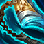

核心裝備
 三相之力
三相之力技能後強化普攻與移速都很適合悟空頻繁 1 技換血與追擊。
 黑色切割者
黑色切割者生命、技能加速與疊減甲讓悟空在範圍大絕中快速幫全隊削前排護甲；使用 v80.7.1 已校正圖示。

步履破壞者補生命與黏人能力，進場後主動緩速讓兩段大絕更不容易被拉開。
 死亡之舞
死亡之舞把爆發延後並在參與擊殺後回復，適合悟空進場後拖長時間。
 史特拉克手套
史特拉克手套高生命裝成形後提供關鍵護盾與韌性，讓第二段大絕更容易打出來。

Wukong · 多段擊飛／半坦進場型戰士
不要第一時間直線衝五人。先用 1 技與 3 技找短換血，等敵方控制交掉後再以 3 技接大絕進場；2 技分身既能躲技能也能延伸傷害，第二段大絕要留給敵人重新聚集或後排想追擊時。
本站評級理由：悟空的分身與兩段大絕在五人單線非常容易打到多人，既能先手也能反開；被動提供的護甲與回復讓他在近戰混戰中越打越硬。近期沒有標準 ARAM 專屬百分比修正，因此以完整 100% 數值發揮。
近期官方未列悟空標準 ARAM 專屬百分比修正；本站維持 100% 輸出／100% 承傷。
技能後強化普攻與移速都很適合悟空頻繁 1 技換血與追擊。
生命、技能加速與疊減甲讓悟空在範圍大絕中快速幫全隊削前排護甲；使用 v80.7.1 已校正圖示。

補生命與黏人能力，進場後主動緩速讓兩段大絕更不容易被拉開。
把爆發延後並在參與擊殺後回復，適合悟空進場後拖長時間。
高生命裝成形後提供關鍵護盾與韌性，讓第二段大絕更容易打出來。

物理普攻多時提高進場承傷；控制與法傷多則改水星之靴。

升級三級鞋後進一步提高前排容錯。

悟空進場後能靠 1、3 技與兩段大絕快速疊滿，長團戰收益高。

參與擊殺後回復，配合死亡之舞在混戰中更難被收掉。

低血時仍能把第二段大絕與 1 技傷害拉高。

提高韌性與緩速抗性，降低被控制時間。

進場第一時間降低被五人集火的爆發。

閃現大絕能突然覆蓋後排，也能在分身後重新拉角度。

兩段大絕之間維持追擊距離，避免被風箏。
1 技 > 3 技 > 2 技
ARAM 開局三個基礎技能各點 1 級，之後主升 1 技、次升 3 技；大絕能點就點。
裝備未成形前不要當純坦克。用 3 技接 1 技短換血後退，2 技留著躲控制或騙敵方關鍵技能。
三相＋黑切後開始有穩定開戰力。大絕第一段可以拆散陣形，敵方重新靠近時再開第二段，把擊飛價值最大化。
你的任務不一定是秒射手；只要兩段大絕打亂三到五人並替後排創造空間就已經成功。史特拉克觸發後盡量把第二輪技能打完再退。
 守護天使
守護天使可替換死亡之舞或史特拉克。
 致死宣告
致死宣告需要重創與穿透時補入。
 智慧末刃
智慧末刃可替換一件純物理防裝，提高魔抗與持續普攻。
看遊戲卡片下方分類 → 點相同分類 → 看左側 S+／S／A。
三技能是穩定突進，能直接啟動位移型增幅並提高進場後爆發。
大絕多段擊飛是悟空最重要的團戰價值，控制增幅能直接放大開戰。
衝刺後的穿透、防禦與傷害效果很適合悟空進場後持續纏鬥。
一技能強化普攻，技能後穿插普攻是悟空的主要連招節奏。
技能循環越快，越容易再次使用突進、分身與強化普攻。
大絕無敵、普攻縮技能與技能普攻循環等單卡具有高價值。
v80.9.0 ARAM S 第七批：悟空以半坦多段擊飛為核心；黑色切割者固定引用 v80.7.1 已校正的 black-cleaver-v2.webp。
ARAM 使用獨立於召喚峽谷的資料集；本站會把官方模式平衡、單線 5v5 特性與出裝／符文適配分開判斷，而不是直接複製峽谷配置。